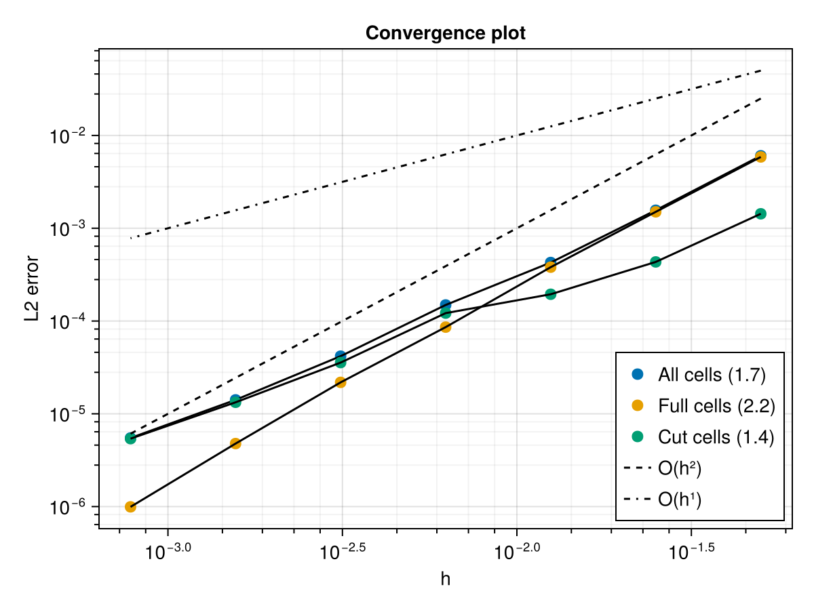

Numerical Modeling of Heat & Mass Transfers in Stefan-type Flows Using a Sharp Interface Two-Fluid Formulation
April 28, 2025
Cut-Cell Discretization
For cells cut by an interface:
\[ V_i(T_i^{n+1} - T_i^n) = \Delta t \left[ \sum_{f \in \text{reg}} k A_f \nabla_f(\tilde{T}) + F_{\Gamma} + S_i V_i \right] \]
- Regular faces treated with standard FV
- Interface flux depends on boundary conditions
- ⚠️ No need for ghost cells or extrapolation
- Assembled into global linear system with interface conditions

Validation: 2D Two-Phase Heat Equation
To validate the method, (see TwoPhase 2025) \(\Omega_1\) is a disk with radius \(R\) in a unit square domain \(\Omega_2\)


Fresh/Dead Cell Problem
- Cells may change status as interface moves:
- Fresh cells: Empty at \(t^n\), wet at \(t^{n+1}\)
- Dead cells: Wet at \(t^n\), empty at \(t^{n+1}\)

- Our space-time approach preserves conservation even with changing domain
VOF Advection vs. Fixed-Point Method
Traditional VOF Approach:
\[ \frac{\partial \alpha}{\partial t} + \nabla\cdot(\alpha\,\mathbf{u}) = 0 \]
- Challenges:
- Velocity extension near interface
- Numerical diffusion over time
- Operator splitting errors

Our Fixed-Point Method:
\[ \rho L \frac{ds}{dt} = \mathbf{q}\cdot\mathbf{n} \Rightarrow V_i^{n+1,(k+1)} = V_i^n + \text{res}_i^{(k)} \]
- Advantages:
- Direct enforcement of Stefan condition
- Guaranteed conservation
- No artificial velocity field needed

Fixed-Point Theoretical Framework
- Our interface update can be written as: \(V^{n+1,(k+1)} = f(V^{n+1,(k)})\)
- Banach Fixed-Point Theorem guarantees:
- Existence and uniqueness of a fixed point
- Convergence if \(f\) is a contraction mapping
- For some \(L < 1\): \(|f(x) - f(y)| \leq L|x - y|\)
- Error decreases by factor \(L\) each iteration
- After \(n\) iterations: \(|V_n - V^*| \leq \frac{L^n}{1-L}|V_0 - V^*|\)

Conservation Properties
- Volume Conservation: Our method directly enforces the Stefan condition at each iteration
- Energy Conservation:
- Interface moves to satisfy heat flux balance: \(\rho\,L\,(V_i^{n+1} - V_i^n) = \mathcal{F}_\Gamma\)
- Even nearly-vanishing dead cells are computed to preserve global energy
- No artificial energy creation/loss
- Maintains sharp interface (no smearing)
- Applicable to non-trivial phase change problems

Test Case: 2D Stefan Problem
- Fusion of a solid slab
- Initial temperature \(T_0 = 0\) (cooled melting)
- Dirichlet boundary condition \(T = 1\)


Convergence Properties
- Linear convergence observed (\(O(k^{1.1})\))
- Efficient with good initial guess (extrapolation or velocity-based)


Future Work
- Front-tracking approach for interface representation
- Extension to Navier-Stokes equations for two-phase flows
- Preconditioning strategies and parallelization


Front-Tracking Enhancement
- Interface represented by a set of markers with positions \(\vec{X}_I\)
- Interface update formulated as optimization problem:
\[ \mathbf{X}^{n+1} = \text{argmin} \left\{ \sum_i \left| F_i \right|^2 \right\} \]
Where \(F_i = \rho L (V_i^{n+1} - V_i^{n}) - \mathbf{q}^\gamma\cdot\mathbf{n}\) is the Stefan condition residual
Solution via non-linear least squares: - Jacobian matrix: \(J_{i,J} = \rho L \frac{\partial V_i^{n+1}}{\partial X_J}\) - Levenberg-Marquardt update: \(\mathbf{X}^{n+1} = \mathbf{X}^{n} - (J^T J + \lambda D)^{-1} J^T \mathbf{F}\)